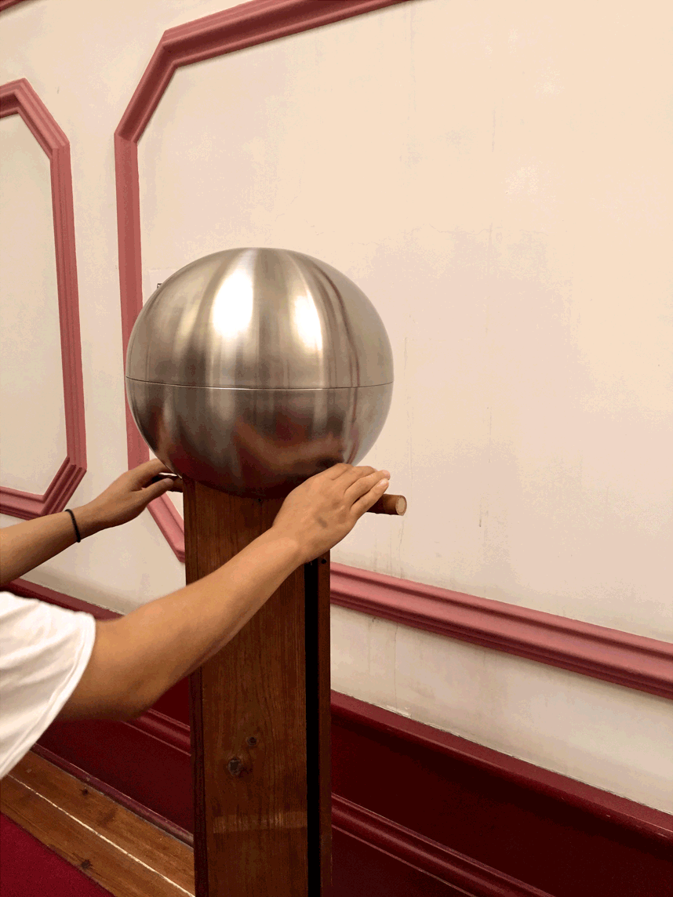
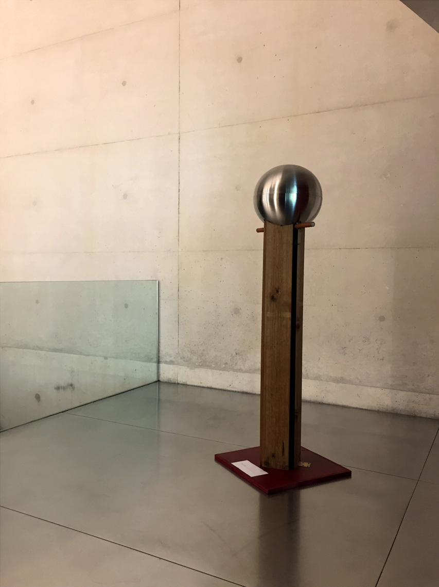

Kinetic sound sculpture, multi-media. Wood, steel, rubber, leather, paper. 2015. Installation view at Escola Superior de Música, Artes e Espectáculo, Porto, 2015. Photo courtesy of the author.
Money making maschine
The «Money making maschine» sound sculpture acquaints us with the inconceivable process of transmutation, bringing the physical into the ephemeral sphere, utilizing an analogue contraption. The audience is invited to participate in actualizing upon the soundtrack of their temporal existence.
Installation view at Escola Superior de Música, Artes e Espectáculo, Porto, 2015. Photo courtesy of the author.
The artist uses the medium of exchange as a means to establishing an aural environment. An individual auditory outburst is actualized, each time a spectator is drawn into corporeal synergy with the installation. «Money making maschine» aims to transcend the fleeting nature of its medium of choice exposing the, often absurdly nonsensical, relation we have constructed around its tangible presence. A peculiar communication technique is introduced as a means of separation from cet obscur objet du désir, allowing a glimpse, an insight, into the detrimental nature of mundane interaction with said object. The critical perspective divulges a hedonistic entrée into a subject that has often invoked a discourse in a deliberately honest and commissary fashion. The gratification of using the interactive sculpture is elevated in the event of reciprocal action between two spectators.
Installation view at Casa da Música, Porto, 2015. Photo courtesy of the author.